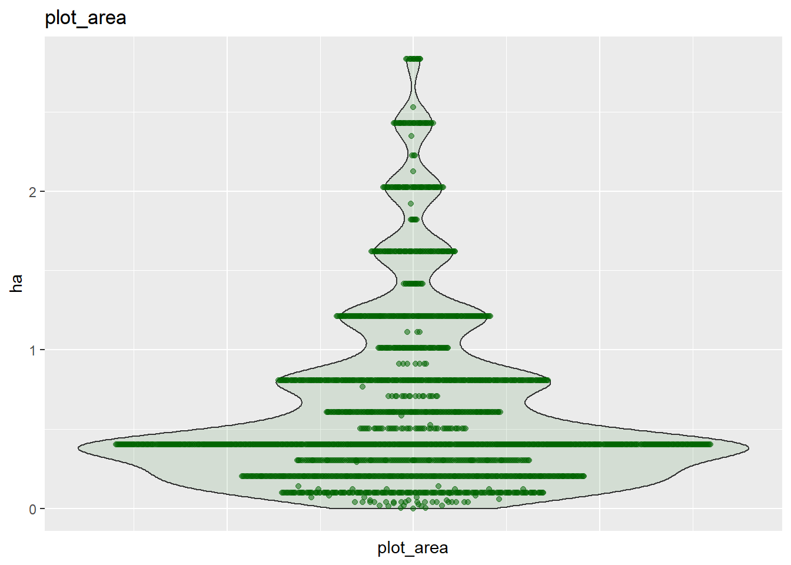
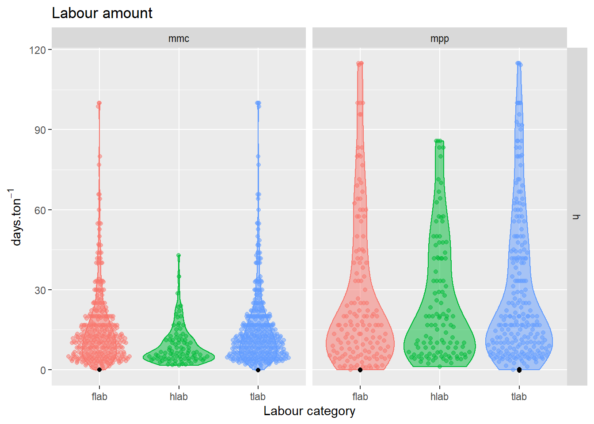
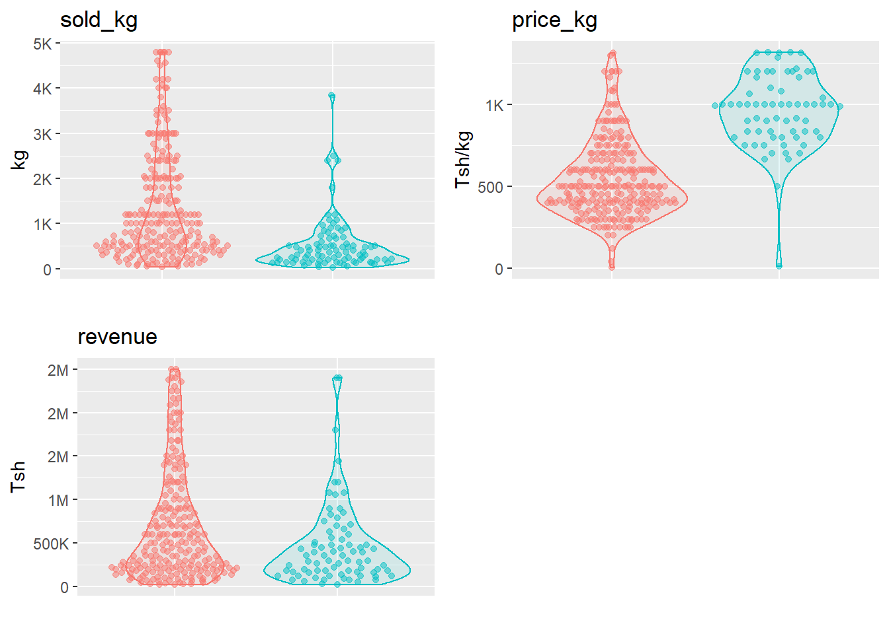

2 Household survey
2.1 Intervening datasets
| Description | File |
|---|---|
| Main household file | TZAPS17_hh.tab |
| Household Crop sales | TZAPS17_hh_cropsales.tab |
| Plot roster | TZAPS17_hh_plot.tab |
| Plot Management Main season | TZAPS17_hh_plotmc.tab |
| Plot Crops Main season | TZAPS17_hh_plotmcc.tab |
| Plot Labour in Main Season | TZAPS17_hh_plotml.tab |
| Household metadata | TZAPS17_ODK_hh.xls |
2.2 Main household dataset
hh <- read.table(here("./data/TAMASA2017/TZAPS17_hh.tab"),
header = TRUE,
sep = "\t",
stringsAsFactors = FALSE)Make a subset of informative variables regarding the household location: hh_info:
hhid: character, general household index starts withSorNdepending on whether the household is located in theSouthernorNorthenzone. This variable can be used to merge household and focal plot files or records from year 2016 and 2017, cfTZAPS17_metadata.xlsxl, sheetFILELIST. Unique values: TRUE.hh_index: integer, numeric index, later use to merge main household data with price, cropsale and plot data. Unique values TRUE.enum_date: date, on which data were collected.zone>region>district>site>ward>village>hamlet: character, spatial hierachy.
Set zone, region and district as factors with meaningful levels.
md_geo <- readxl::read_xls(here("./data/TAMASA2017/metadata/TZAPS17_ODK_hh.xls"),
sheet = "external_choices")
md_region <- md_geo %>% filter(list_name == "regions")
md_district <- md_geo %>% filter(list_name == "districts")hh$zone <- factor(hh$zone, levels = 1:2, labels = c("N", "S"))
hh$region <- factor(hh$rcode,
levels = md_region$name,
labels = md_region$label)Fill in village and hamlet name for those filed under “other”
hh$village[hh$village == "OTHER"] <- hh$village_alt[hh$village == "OTHER"]
hh$hamlet[hh$hamlet == "OTHER"] <- hh$hamlet_alt[hh$hamlet == "OTHER"]Select informative variables
hh_info <- hh %>%
select(hhid, hh_index, enum_date, zone, region, district, site, ward, village, hamlet)2.2.1 Growing Seasons
Below, is a scheme of the cropping calendar in Tanzania. This scheme was constructed based on the field knowledge of Esther Mungi (esther.mungi@wur.nl), a PhD student doing her research in Tanzania who also took part in the TAMASA survey.
Key points:
The main season is when most of the precipitation occur and thus it is during the main season that most maize is grown.
Pigeon pea has a much longer development cycle than maize, that lasts upon both main and short season.
As we will later demonstrate, most maize and pigeon pea crops were not harvested upon enumeration.

## `summarise()` regrouping output by 'enum_date' (override with `.groups` argument)
2.3 Buying prices maize at nearest local market
Extract the data in household survey regarding maize price at the nearest local market in Tsh/kg for the three available periods:
| Season | Label | Suffix | Suffix meaning |
|---|---|---|---|
| May 2016 | pric1 | a | price (Tsh) |
| pric1 | b | corresponding amount (given unit) | |
| December 2017 | pric2 | a | price (Tsh) |
| pric2 | b | corresponding amount (given unit) | |
| February 2017 | pric3 | a | price (Tsh) |
| pric3 | b | corresponding amount (given unit) |
Remove negative prices and values without corresponding household index hhid
hh_prices <- modify(hh_prices, ~ ifelse(.x < 0, NA, .x))
hh_prices <- hh_prices[which(!is.na(hh_prices$hh_index)), ]Convert all price to Tsh/kg:
hh_prices <- convert_prices_tsh_kg(hh_prices,
from = paste0("pric", 1:3,"b"),
to = paste0("mz_price_", c("may16", "dec17", "feb17")))
hh_prices <- hh_prices %>% select(hh_index, starts_with("mz_price_"))plot.unit = "Tsh/kg"
title = "Maize price at nearest local market"
hh_prices %>%
pivot_longer(cols = colnames(hh_prices)[idc_price],
names_to = "category",
values_to = "value") %>%
separate(col = category, into = c("mz", "pr", "month"), sep = "_") %>%
plot_var(var = value, plot.unit = plot.unit)+
facet_wrap(. ~ month)+
xlab("")+
ggtitle(title)
Set maximum price to 2000 Tsh/kg
plot.unit = "Tsh/kg"
title = "Maize price at nearest local market"
hh_prices %>%
pivot_longer(cols = colnames(hh_prices)[idc_price],
names_to = "category",
values_to = "value") %>%
separate(col = category, into = c("mz", "pr", "month"), sep = "_") %>%
plot_var(var = value, plot.unit = plot.unit)+
facet_wrap(. ~ month)+
xlab("")+
ggtitle(title)2.4 Plot data
Correspond to a general inventory of the farm plots. We used plot data to first calculate plots area per household. Then isolate the two cropping system of interest, maize monoculture (mmc) and maize / pigeon pea intercropping (mpp). We then calculate yield for each plot and lastly gather information on labour input per ha for each cropping system.
2.4.1 Plots area in hectares
Load the data set and subset relevant variables:
hh_index: household index.plot_id: plot index within household.plot_index: unique row identifier of this dataset. Incremental integer.plot_area_a: plot area amount (numerical value).plot_area_u: plot area unit (corresponding unit).
hh_plot <- read.table(here("./data/TAMASA2017/TZAPS17_hh_plot.tab"),
header = TRUE,
sep = "\t",
stringsAsFactors = FALSE)
hh_area <- hh_plot %>% select(hh_index, plot_index, plot_id, plot_area_a, plot_area_u)Convert each plot area to hectares
hh_area <- inner_join(hh_area,
dics$areaunit,
by = c("plot_area_u" = "cat"))
hh_area <- hh_area %>% mutate(plot_area = plot_area_a * hectares)Plots with area > 5 ha are considered as outliers and replace by NA.
# hh_area$plot_area[hh_area$plot_area > 5] <- NA
hh_area$plot_area <- outlier_to_NA(hh_area$plot_area, quantile = 0.95)
2.4.2 Define cropping systems
2.4.2.1 Relevant datasets
Plot management in main season
hh_plotmc <- read.table(here("./data/TAMASA2017/TZAPS17_hh_plotmc.tab"),
header = TRUE,
sep = "\t",
stringsAsFactors = FALSE)Crops grown in main season
hh_plotmcc <- read.table(here("./data/TAMASA2017/TZAPS17_hh_plotmcc.tab"),
header = TRUE,
sep = "\t",
stringsAsFactors = FALSE)Merge together management and crop data for plots in main season and keep only relevant variables:
From hh_plotmc:
pmc_index: unique row identifier.mc1: plot index wihtin household index.mc5: Was this plot intercropped ? i.e planted in alternate rows, or planted around other crop.mc6: total number of crops on the plot.
From hh_plotmcc:
pmc_index: unique row identifier from parent dataset (hh_plotmc).pmcc_index: unique row identifier for that dataset.mc8: crop(s).mc8o: other crops if crop grown is not present in enumerator’s list.mc9: Area under a given crop.mc10: Have you finished harvesting?mc11: Harvest quantity (Estimate of expected harvest if harvesting has not been completed).mc12: Harvest unit (Estimate of expected harvest if harvesting has not been completed).
hh_plotmc and hh_plotmcc can be merged on: pmc_index.
2.4.2.2 Extract infomation
Get plots with intercropping (mc5 == 1) and only two crops (mc6 == 2).
Get main season plot index (pmc_index) of plots harbouring maize with pigeon pea intercrop.
l_plotd_2c <- split(plotd_2c, plotd_2c$pmc_index)
mpp_pmc_index <- map(l_plotd_2c, "mc8") %>%
map( ~ intersect(.x, c("maize", "pigeon_pea"))) %>%
keep( ~ length(.x) == 2) %>%
names()Get pmc_index of plots under maize monoculture .i.e without intercropping (mc5 == 0).
lgl_unique <- function(x) !x %in% x[which(duplicated(x))]
mmc_pmc_index <- plotd %>%
filter(lgl_unique(pmc_index), mc8 == "maize", mc5 == 0) %>%
select(pmc_index) %>%
deframe()Create new variable indicating the type of cropping system of each plot: cropsys.
| Cropping systems | Abbreviations |
|---|---|
| maize monoculture | mmc |
| maize with pigeon pea intercrop | mpp |
plotd$cropsys <- "other"
plotd$cropsys[plotd$pmc_index %in% mmc_pmc_index] <- "mmc"
plotd$cropsys[plotd$pmc_index %in% mpp_pmc_index] <- "mpp"Checking if maize / pigeon pea intercrop plots pmc_index appear exactly two times.
mpp <- plotd %>%
filter(mc5 == 1, cropsys == "mpp") %>%
select(pmc_index) %>%
deframe()
table(table(mpp))##
## 2 4
## 156 1One pmc_index appears four times. It seems also to include beans.
susp <- names(which(table(mpp) != 2))
plotd %>%
filter(pmc_index %in% susp) %>%
select(hh_index, pmc_index, pmcc_index, mc5, mc6, mc8, mc9)## hh_index pmc_index pmcc_index mc5 mc6 mc8 mc9
## 1 36 179 220 1 2 maize 3
## 2 36 179 221 1 2 pigeon_pea 3
## 3 36 179 222 1 2 beans 4
## 4 36 179 223 1 2 pigeon_pea 4This irrelevant plot is discarded.
Keep only plots with the two cropping systems of interest.
2.4.3 Intermezzo: was harvest finished at enumeration date ?
## `summarise()` regrouping output by 'enum_date', 'zone', 'mc10' (override with `.groups` argument)
In most case harvest was not finished at enumeration date for both maize and pigeon pea.
2.4.4 Calculate yield
We first calculate yield in \(t.ha^{-1}\) to later be able to express harvest labour in \(work \, days.t^{-1}\).
hh_area and plotd need to be merged both on household index and plot index since we are working at the plot level. Jordan Chamberlain gave us the trick. Plot index variable names are inconsistent between datsets.
Merge with proper dictionary to convert units in kg and calculate yield in \(t.ha^{-1}\).
hh_plot <- hh_plot %>%
inner_join(dics$unit, by = c("mc12" = "cat")) %>%
mutate(harvest = mc11 * ifelse(mc8 == "maize", kg_maize, kg_pp),
yield = harvest / (plot_area * 1000))ggplot(hh_plot) +
aes(y = yield, x = mc8, fill = mc8, color = mc8) +
geom_violin(alpha = 0.5)+
ggbeeswarm::geom_quasirandom(alpha = 0.5)+
facet_wrap(. ~ cropsys)+
labs(x = "", y = "yield (t/ha)")
Based on the knowledge of Esther Mungi who is an agronomist working in Tanzania and who participated to the TAMASA survey as an enumerator, we fixed the upper limit for maize yield to 8 \(t.ha^{-1}\) and 3 \(t.ha^{-1}\) for pigeon pea.
hh_plot$yield[hh_plot$mc8 == "maize"] <- outlier_to_NA(hh_plot$yield[hh_plot$mc8 == "maize"],
threshold = 7)
hh_plot$yield[hh_plot$mc8 == "pigeon_pea"] <- outlier_to_NA(hh_plot$yield[hh_plot$mc8 == "pigeon_pea"],
threshold = 3)ggplot(hh_plot) +
aes(y = yield, x = mc8, fill = mc8, color = mc8) +
geom_violin(alpha = 0.5)+
ggbeeswarm::geom_quasirandom(alpha = 0.5)+
facet_wrap(. ~ cropsys)+
labs(x = "", y = "yield (t/ha)")
2.5 Labour (in Main season only)
All labour variables are measured in days.
Labour variables typology:
prefixlab_suffix1suffix2
prefix: labour category
h = hired
f = family
suffix1: task
l = land preparation
p = planting
r = fertilizing
w = weeding
h = harvesting
suffix2: worker type or price in Tsh
m = man
w or f = women, not consistent ! depends on labour category (w if family and f if hired)
w = price in Tsh only for hired labour, then correspond to total wages.
c = child
Labour data main season
hh_plotml <- read.table(here("./data/TAMASA2017/TZAPS17_hh_plotml.tab"),
header = TRUE,
sep = "\t")
hh_plotml <- hh_plotml %>%
select(hh_index, pl1, pml_index,
matches("^flab_[a-z]{2}$"),
matches("^hlab_[a-z]{2}$"))2.5.1 Combine cropping sytems and labour data
hh_plotml <- inner_join(hh_plotml,
distinct(select(plotd, hh_index, mc1, cropsys)),
by = c("hh_index", "pl1" = "mc1"))Do any of those labour variables harbour negative values ?
## [1] "No variable with negative values"2.5.2 Aggregate over labour category:
Reminder: Labour category correpsond to the variable prefix: h for hired and f for family.
First split by labour category prefix.
Then sum over work type (suffix2).
2.5.3 Calculate labour and wages per hectare
Combine hired labour price and labour variables in one data.frame.
hlab_price <- hh_plotml %>% select(hh_index, pl1, pml_index, cropsys, matches("^hlab_.w$"))
lab_data <- inner_join(lab_task, hlab_price, by = "pml_index")Update plot data with labour data.
Calculate labour and wages per hectare.
lab_vars <- grep("^[a-z]lab_[a-z]*", names(hh_plot), value = TRUE)
for (var in lab_vars) {
hh_plot[, paste0(var, "_ha")] <- hh_plot[[var]] / hh_plot$plot_area
}Drop original variables.
2.5.4 Total labour input per ha
We now sum hired and family labour to get the total labour per ha for each task (planting, weeding…).
Note that in the dedicated function sum_category, the argument pattern is matching the suffix coding for task type (planting, weeding,…). This is because the task is the labour type we want our variable to be aggregated on. The function will then recognize all variables corresponding to a given task and add them together.
lab_vars_ha <- grep("^.lab_.*_ha$", names(hh_plot), value = TRUE)
tlab_ha <- sum_category(hh_plot[, lab_vars_ha],
pattern = "(?<=_).(?=_)")Append _ha at the end of the labour variables.
Update hh_plot with final labour per ha variable aggregated by tasks.
2.5.5 Harvest labour in \(work \, days.t^{-1}\)
\[ \frac{[days.ha^{-1}]}{[kg.ha^{-1}]} \rightarrow [days.kg^{-1}] \times 10^3 \rightarrow [days.t^{-1}] \]
hh_plot <- hh_plot %>%
mutate(flab_h_dt = (flab_h_ha / yield),
hlab_h_dt = (hlab_h_ha / yield),
tlab_h_dt = (tlab_h_ha / yield)) 
lab_vars_dt <- grep("^.lab_h_dt$", names(hh_plot), value = TRUE)
hh_plot <- modify_at(hh_plot, lab_vars_dt, outlier_to_NA, quantile = 0.95)
2.5.5.1 Plot data: relevant variables
Keep only relevant variable for plot data and give some more informative names.
2.6 Sales
hh_cropsales <- read.table(here("./data/TAMASA2017/TZAPS17_hh_cropsales.tab"),
header = TRUE,
sep = "\t")2.6.1 Relevant Crop sales variables:
csal2c: crop soldcsal3: harvest quantitycsal4: harvest unitcsal5: sold quantitycsal6: sales unitcsal7: price per unit at largest sale (Tsh). Terminology from:TZAPS17_ODK_hh.xls. Largest sale = peak sales ?
Select only the cropsales for maize and pigeon pea and create a subset of relevant variables.
hh_cropsales <- hh_cropsales %>%
filter(csal2c == "maize"| csal2c == "pigeon_pea") %>%
select(hh_index, cropsales_index, csal2c, csal3, csal4, csal5, csal6, csal7)## [1] "csal3" "csal5"hh_cropsales %>%
pivot_longer(cols = c("csal3", "csal5"),
names_to = "var",
values_to = "value") %>%
ggplot()+
aes(y = value, x = csal2c, group = csal2c, fill = csal2c, color = csal2c)+
ggbeeswarm::geom_quasirandom(alpha = 0.5)+
geom_violin(alpha = 0.5)+
facet_wrap(. ~ var)
hh_cropsales <- modify_at(.x = hh_cropsales,
.at = c("csal3", "csal5", "csal7"),
.f = outlier_to_NA,
quantile = 0.95)hh_cropsales %>%
pivot_longer(cols = c("csal3", "csal5"),
names_to = "var",
values_to = "value") %>%
ggplot()+
aes(y = value, x = csal2c, group = csal2c, fill = csal2c, color = csal2c)+
ggbeeswarm::geom_quasirandom(alpha = 0.5)+
geom_violin(alpha = 0.5)+
facet_wrap(. ~ var)
2.6.2 Calculate per kg
hh_cropsales <- full_join(hh_cropsales, dics$unit, by = c("csal6" = "cat")) %>%
mutate(sold_kg = csal5 * kg_maize,
price_kg = csal7 / kg_maize,
revenue = csal5 * csal7) %>%
rename(kg_maize_s = kg_maize,
unit_s = unit,
crop_sold = csal2c) %>%
select(-kg)hh_cropsales <- hh_cropsales %>%
select(hh_index, crop_sold, sold_kg, price_kg, revenue) %>%
filter(!is.na(hh_index))plot_var_matrix(hh_cropsales,
vars = c("sold_kg", "price_kg", "revenue"),
plot.unit = c("kg", "Tsh/kg", "Tsh"),
plot.dim = c(2, 2),
fill = "crop_sold",
label.si = TRUE)hh_cropsales <- modify_at(.x = hh_cropsales,
.at = c("sold_kg", "price_kg", "revenue", "harvest"),
.f = outlier_to_NA,
quantile = 0.95)plot_var_matrix(hh_cropsales,
vars = c("sold_kg", "price_kg", "revenue"),
plot.unit = c("kg", "Tsh/kg", "Tsh"),
plot.dim = c(2, 2),
fill = "crop_sold",
label.si = TRUE)
2.7 Merge
Combine household information, maize buying prices, plots (maize area + labour) and sales data together in one data.frame.
household <- reduce2(list(hh_info, hh_prices, hh_plot, hh_cropsales),
as.list(rep("hh_index", 3)),
full_join)
# household <- full_join(household, hh_cropsales,
# by = c("hh_index", "crop" = "crop_sold"))
#
# dim(household)Remove rows that have no hhid
Save intermediate dataset.
2.8 Recap
| Variable | Description | Unit | Type |
|---|---|---|---|
| hhid | general household index starts with S or N depending on whether the household is located in the Southern or Northen zone. | - | character |
| hh_index | household index internal to the data set, simple integer incrementation. | - | integer |
| enum_date | survey date | - | date |
| zone | zone (North or South) | - | character |
| region | region | - | character |
| district | district | - | character |
| site | site | - | character |
| ward | ward | - | character |
| village | village | - | character |
| hamlet | hamlet | - | character |
| mz_prize_may16 | Buying price nearest local market in May 2016 | \(Tsh.kg^{-1}\) | double |
| mz_prize_dec17 | Buying price nearest local market in December 2016 | \(Tsh.kg^{-1}\) | double |
| mz_prize_feb17 | Buying price nearest local market in February 2017 | \(Tsh.kg^{-1}\) | double |
| plot_id | plot index | - | integer |
| intercrop_bin | was this plot intercropped ? | - | integer |
| nb_crops | number of crops on the plot | - | integer |
| crop | crop name, either “maize” or “pigeon_pea” | - | character |
| harvested_bin | was this plot harvested at enumeration date ? | - | integer |
| cropsys | cropping system, either mmc = Maize MonoCulture or mpp = Maize Pigeon Pea | - | character |
| plot_area | plot area estimate by farmer | \(ha\) | double |
| yield | yield most of the time as estimated by farmer since enumeration predated harvest in most cases | \(ton.ha{-1}\) | double |
| flab_h_ha | family labour - harvesting | \(work \, day.ha{-1}\) | double |
| flab_l_ha | family labour - land preparation | \(work \, day.ha{-1}\) | double |
| flab_p_ha | family labour - planting | \(work \, day.ha{-1}\) | double |
| flab_r_ha | family labour - fertilizing | \(work \, day.ha{-1}\) | double |
| flab_w_ha | family labour - weeding | \(work \, day.ha{-1}\) | double |
| hlab_h_ha | hired labour - harvesting | \(work \, day.ha{-1}\) | double |
| hlab_l_ha | hired labour - land preparation | \(work \, day.ha{-1}\) | double |
| hlab_p_ha | hired labour - planting | \(work \, day.ha{-1}\) | double |
| hlab_r_ha | hired labour - fertilizing | \(work \, day.ha{-1}\) | double |
| hlab_w_ha | hired labour - weeding | \(work \, day.ha{-1}\) | double |
| hlab_lw_ha | price hired labour - land preparation | \(Tsh.work \, day^{-1}.ha^{-1}\) | double |
| hlab_pw_ha | price hired labour - planting | \(Tsh.work \, day^{-1}.ha^{-1}\) | double |
| hlab_ww_ha | price hired labour - weeding | \(Tsh.work \, day^{-1}.ha^{-1}\) | double |
| hlab_rw_ha | price hired labour - fertilizing | \(Tsh.work \, day^{-1}.ha^{-1}\) | double |
| hlab_hw_ha | price hired labour - harvesting | \(Tsh.work \, day^{-1}.ha^{-1}\) | double |
| tlab_h_ha | total labour - harvesting | \(work \, day.ha{-1}\) | double |
| tlab_l_ha | total labour - land preparation | \(work \, day.ha{-1}\) | double |
| tlab_p_ha | total labour - planting | \(work \, day.ha{-1}\) | double |
| tlab_r_ha | total labour - fertilizing | \(work \, day.ha{-1}\) | double |
| tlab_w_ha | total labour - weeding | \(work \, day.ha{-1}\) | double |
| flab_h_dt | family labour - harvesting in work days per ton | \(work \, day.ton{-1}\) | double |
| hlab_h_dt | hired labour - harvesting in work days per ton | \(work \, day.ton{-1}\) | double |
| tlab_h_dt | total labour - harvesting in work days per ton | \(work \, day.ton{-1}\) | double |
| crop_sold | name of the crop sold, either “maize” or “pigeon_pea” | - | character |
| sold_kg | amount of crop sold | \(kg\) | double |
| price_kg | price per kg maize | \(Tsh.kg^{-1}\) | double |
| revenue | revenue from crop sales | \(Tsh\) | double |
Labour variable typology:
prefixlab_suffix1(w)_ha
prefix: labour category
h = hired
f = family
t = total
suffix1: task
l = land preparation
p = planting
r = fertilizing
w = weeding
h = harvesting
w: total wages for hired labour in Tsh
ha: variable in working days / ha.